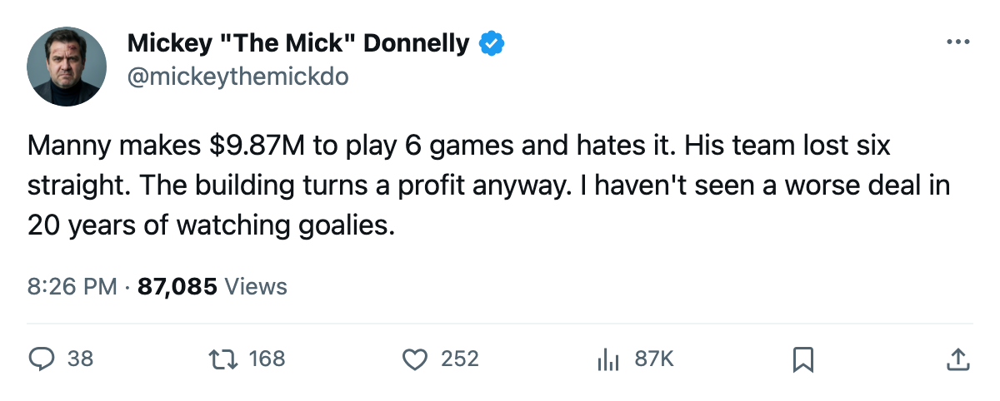
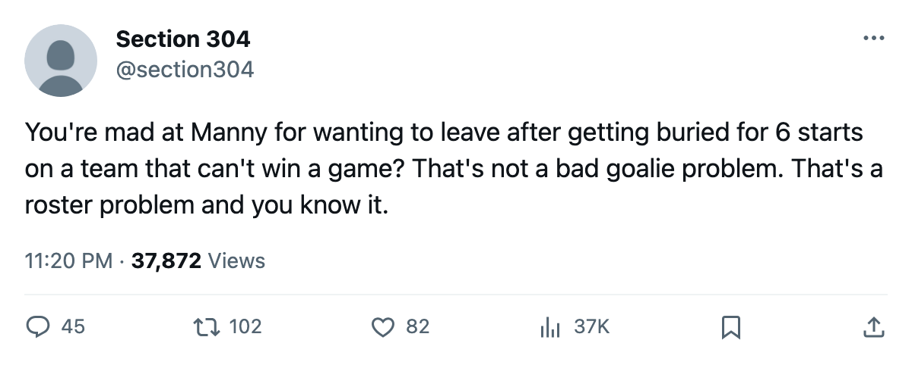

$9.87M, 6 GAMES, MORALE 75, LOST SIX STRAIGHT, PROFIT $19.30M: WELCOME TO MINNESOTA
Manny Fernandez wants out of a room that doesn't care. The front office doesn't care either. They're making $19.30M a game watching this.
 Mickey "The Mick" DonnellyColumnist, ex-goalie · The Penalty Box
Mickey "The Mick" DonnellyColumnist, ex-goalie · The Penalty Box
 Manny Fernandez90 makes $9.87M. He has played 6 games. His morale sits at 75, fifth-lowest in this league among 30 clubs' worth of players. His team is 1-5-2, dead last in the
Manny Fernandez90 makes $9.87M. He has played 6 games. His morale sits at 75, fifth-lowest in this league among 30 clubs' worth of players. His team is 1-5-2, dead last in the  NW division, and it just lost six in a row. The franchise pockets $19.30M per game on the strength of it.
NW division, and it just lost six in a row. The franchise pockets $19.30M per game on the strength of it.
I was a goaltender for a long time. I know what 6 starts in a season looks like from the other side of the blue line. It looks like a man who isn't wanted, whose coach doesn't trust him, whose front office signed him to 3 more years he never asked for, and whose locker room has moved on without him. Manny Fernandez is in a bad place.
The  Minnesota Wild room averages 89.9, which is middle-of-the-pack. The two men at the top of the happiness list in that building are
Minnesota Wild room averages 89.9, which is middle-of-the-pack. The two men at the top of the happiness list in that building are  Steve Webb64 at 100 and David Ling63 at 76. The man at the bottom of it is the one collecting the biggest check on the payroll. He makes $9.87M out of a $51.77M team salary. That is the second-highest individual figure I can find in this league, and the only man above him plays in goal for a club with more wins.
Steve Webb64 at 100 and David Ling63 at 76. The man at the bottom of it is the one collecting the biggest check on the payroll. He makes $9.87M out of a $51.77M team salary. That is the second-highest individual figure I can find in this league, and the only man above him plays in goal for a club with more wins.
The record says Minnesota Wild has scored 23 goals and given up 28 in 9 games. That is not goaltending. That is not a broken system. That is a team that doesn't close, that loses tight ones, that cannot string a win together. The last thing they did was lose to  Colorado Avalanche 4-3 on the road. Tonight they get Colorado Avalanche back at home. The series stands 1-0 Colorado.
Colorado Avalanche 4-3 on the road. Tonight they get Colorado Avalanche back at home. The series stands 1-0 Colorado.
 Saku Koivu86 has 14 points in 9 games.
Saku Koivu86 has 14 points in 9 games.  Richard Park79 has 15. These two are 30 and 29 years old, they are carrying the offense, and they are doing it in front of a goaltender making $9.87M who has been in the crease 6 times. You want to know why a 21-year-old center like Pierre-Marc Bouchard81 has zero points in 9 games despite the Index sitting him 9 points above his base? I'd look at who's in the net in front of him.
Richard Park79 has 15. These two are 30 and 29 years old, they are carrying the offense, and they are doing it in front of a goaltender making $9.87M who has been in the crease 6 times. You want to know why a 21-year-old center like Pierre-Marc Bouchard81 has zero points in 9 games despite the Index sitting him 9 points above his base? I'd look at who's in the net in front of him.
The attendance sits at 14,956. The ticket costs $82. The revenue is $32.66M and the profit is $19.30M. Do the math on what it costs a man and his two kids to sit in that building on a Saturday and watch this product. Then look at the man behind the net collecting nearly $10M to play 6 games and hate every minute of it.
The Bureau's Book has Manny Fernandez at 89 overall, which is good. The Development Index has nothing to say about him, which means his form reads flat against his base. Six starts, no movement, morale in the basement, three years left on the deal. Nobody's talking about this because Minnesota is Minnesota and nobody reads the Minnesota papers.
I am. Fix it or trade him. Stop collecting $9.87M worth of resignation while a Calder winner in the same building and a first-round pick who can't score a point in 9 games watch you punt every night.

